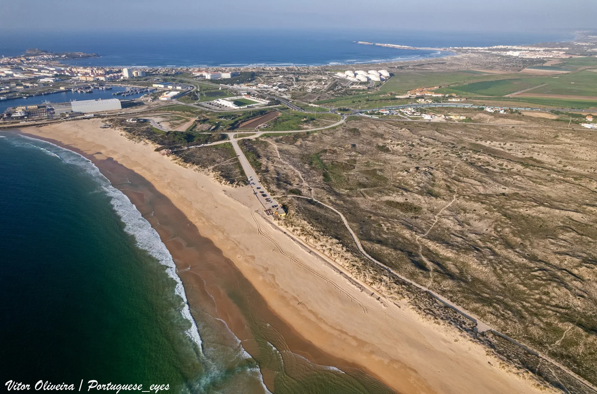

Supertubos — Peniche
Portugal · surf

Le beach break le plus puissant d'Europe, surnommé la « Pipeline européenne » pour ses tubes parfaits et creux.
- Lieu
- Portugal
- Niveau
- Expert
- Activités
- surf
- Type d'eau
- Mer / océan
- Coordonnées
- 39.34, -9.37 (position approximative du secteur)
Dangers à connaître
- Tubes rapides et puissants.
- Fonds peu profonds.
Le conseil d'Ocean Buddy
Réservé aux confirmés du tube : take-off engagé sur un fond de sable peu profond.
Ouvrir dans Ocean Buddy Télécharger sur l'App Store
Source : Description historique Ocean Buddy · vérification externe en attente.